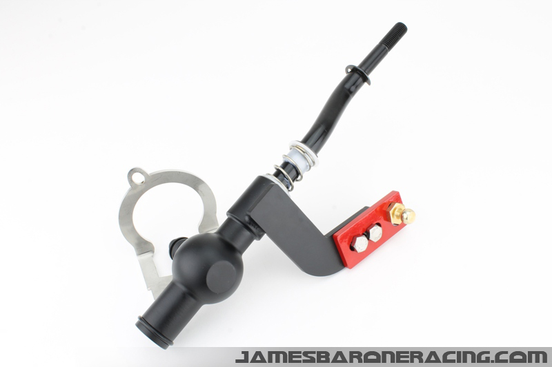
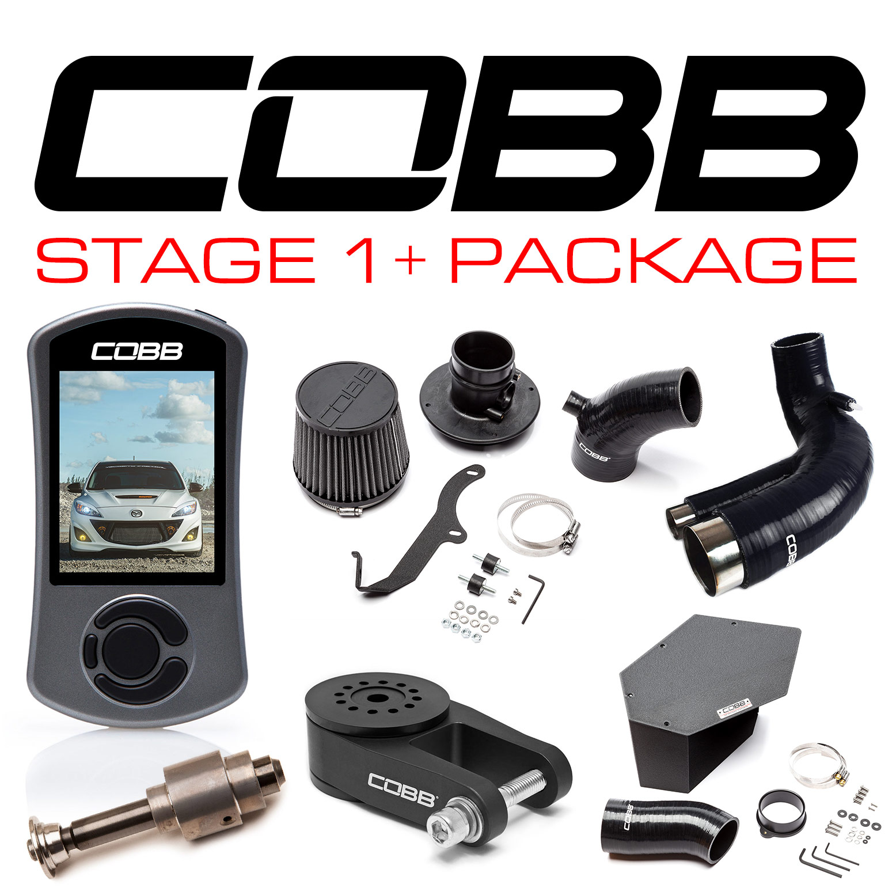

A modified car is any car that has been altered or enhanced for the purpose of appearance or performance. Typically, the car is modified with aftermarket components.
Owners sometimes modify their vehicles to give them a distinctive appearance, to improve their performance,
to add desired features, change the engine (alternate or replacement engines), suspension, or to add a long-range
fuel tank. Others modify their vehicles so that they are better suited to a specialised purpose.
As a student, I always get asked this question by my family and friends: "Why spend the money on car parts? Your car is running fine."
For the longest time, I've always found it hard to explain until I came across the video linked below.
COBB Stage 1+ Power package
Exhaust: test pipe and resonator delete
|  |
|  |
Stickers
Painted valence
Enkei rims